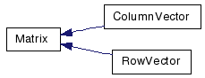
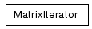

Main Page
Classes
Files
Class List
Class Hierarchy
Class Members
Graphical Class Hierarchy
Go to the textual class hierarchy


Generated on Tue May 18 16:51:49 2010 for LinearC++ by
1.6.3
 1.6.3
1.6.3